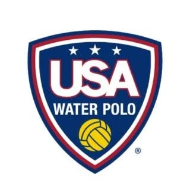

← Back to tournaments

2026 Junior Olympics · Weekend 1
Junior Olympics Weekend 1
Girls & Coed · Live schedule and team pathways
Choose an age, division, and team to see the complete schedule, next game, possible opponents, and how each result changes the tournament path.
Explore a division
Loading division…
Choose an age, division, and team.
#18JO division seed is displayed separately and never stored as part of the team name.
Official schedule source
CPI loads a verified schedule immediately, then checks the official Google Sheet for newer data.
Start here
Choose a team to map its tournament path.
The full division schedule is available below. Select a team to see its next game, record, possible opponents, win/loss destinations, and relevant bracket games.
Selected team
Journey and relevant games
Possible opponents
Other team journeys to explore
Full division schedule